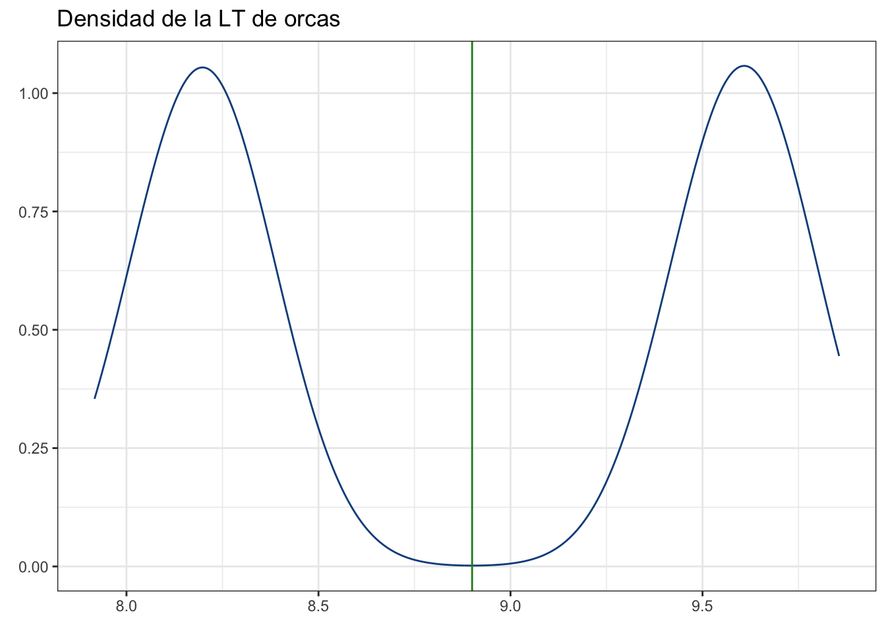
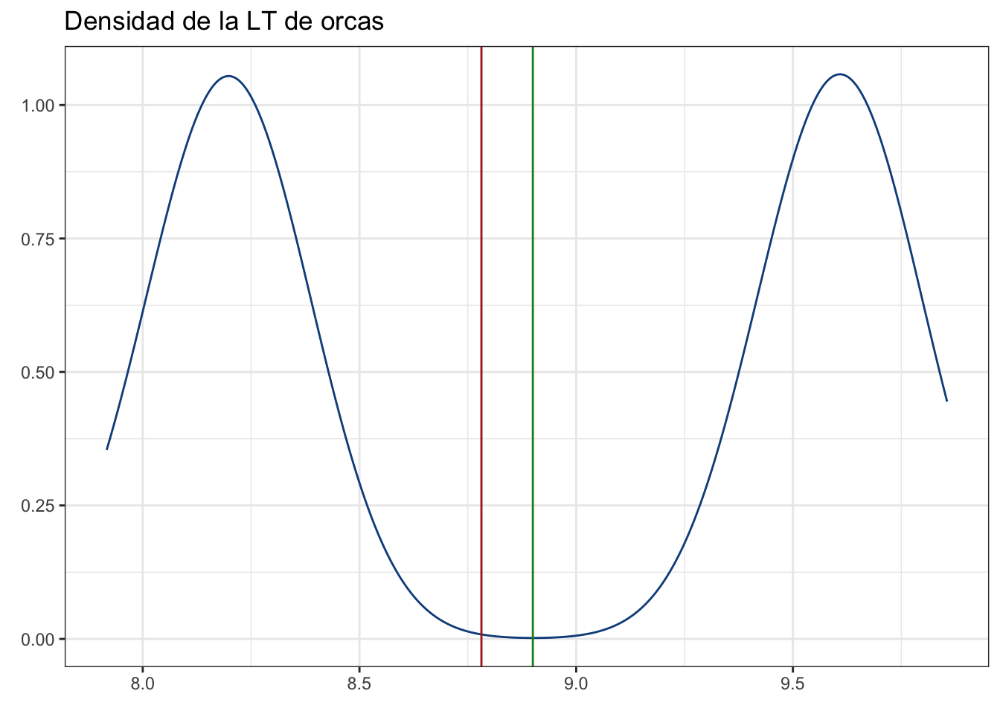
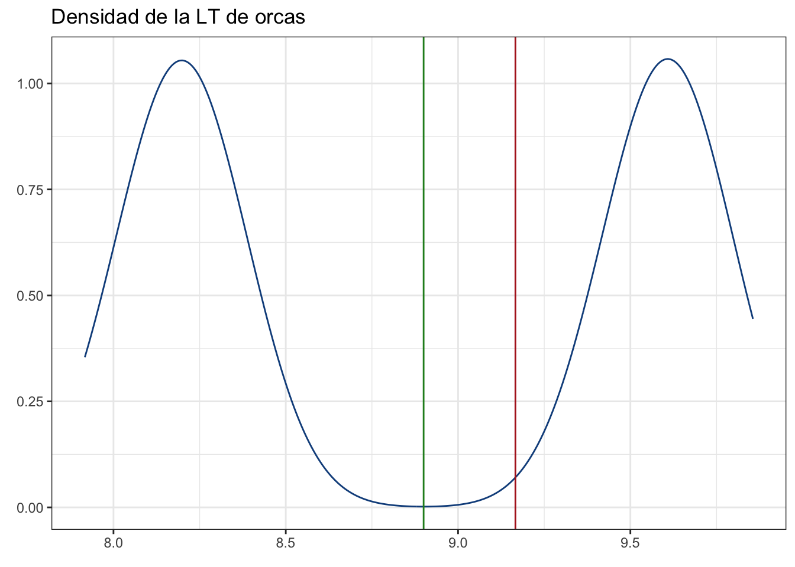
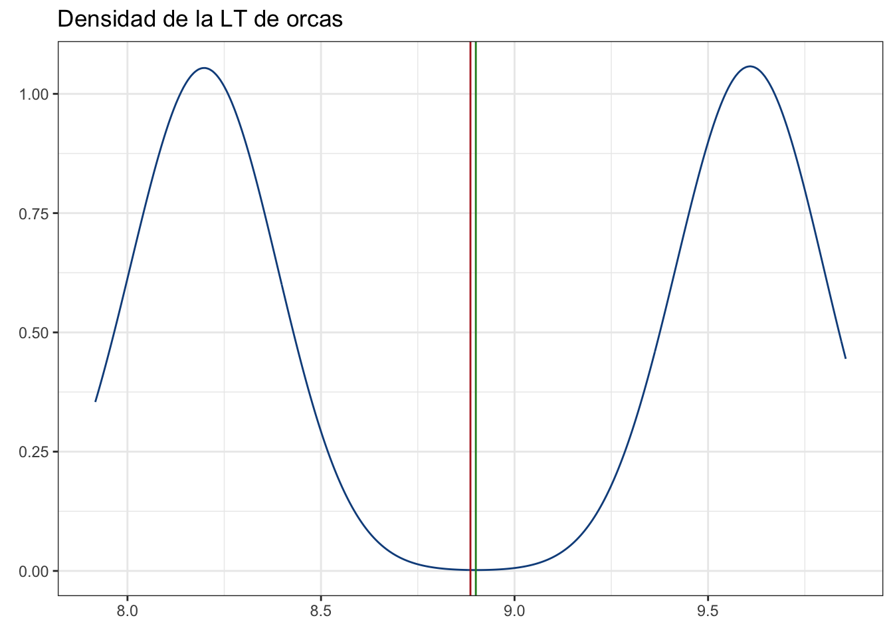
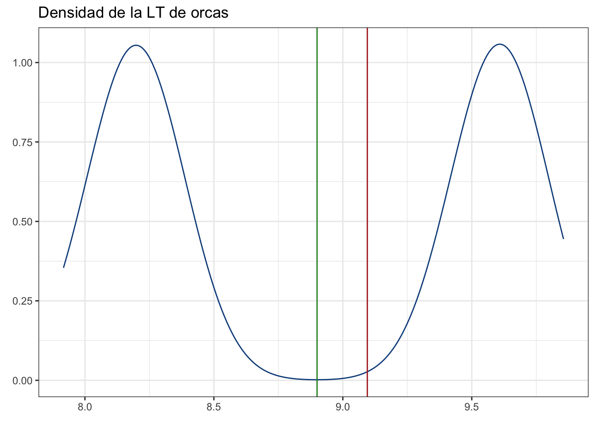

machos <- rnorm(500, mean = 9.6, sd = 0.1)
hembras <- rnorm(500, mean = 8.2, sd = 0.1)
media_real <- mean(c(9.6, 8.2))
pobl <- data.frame(sexo = c(rep("M", 500), rep("H", 500)),
lt = c(machos, hembras))7 Introducción al muestreo
7.1 Datos y variables
En una investigación reunimos datos con el objetivo de obtener alguna conclusión o predicción. Pues bien comencemos definiendo un dato como una representación puntual de la realidad. Son un solo valor, sea una sola medición, un promedio, una desviación estándar, una proporción de sexos, etc, y el conjunto de datos de un mismo atributo medidos en distintos individuos nos dan una variable. Es decir, en nuestros conjuntos de datos cada valor es un dato, y cada columna (usualmente) es una variable. ¿Por qué es importante conocer esto? Porque hay distintos tipos de variables, los cuales definen cómo es que vamos a graficar y tratar esos datos:
- Cualitativas: hacen referencia a las cualidades de nuestros individuos, y tienen dos escalas:
- Nominal: hace referencia a categorías en las que no hay un orden o distintas importancias. Ejemplos pueden el sexo o el color.
- Ordinal: aquí hay un órden, y un ejemplo muy claro son las encuestas: 0 es nunca, 1 es casi nunca, 2 es ocasionalmente, 3 es casi siempre y 4 es siempre. Aunque son categorías bien definidas, 2 < 3 y 3 < 4. No son cuantitativas porque las respuestas están sujetas a la interpretación personal, pero descartar el órden en el análisis sería un error.
- Cuantitativas, que hacen referencia a atributos cuantificables de manera objetiva. Hay dos tipos, cada uno con dos escalas.
- Tipos:
- Discretas: Son solo números enteros. Un ejemplo cotidiano es la edad, que usualmente la expresamos en años. No vamos por la vida diciendo tengo 18.5 años o 18 años con 6 meses, solo decimos tengo 18 años.
- Continuas: Es el caso contrario, son números fraccionarios. Se les denomina continuas porque hay un número infinito de valores posibles entre un valor y el otro, un ejemplo es la temperatura (35.1ºC, 100 K, etc.)
- Escalas:
- Intervalo: La escala de intervalo es aquella en donde el 0 NO es absoluto o, mejor dicho, donde el 0 es arbitrario. La temperatura expresada en grados centígrados es un ejemplo claro, 0ºC no indica ausencia de movimiento molecular, solo toma como referencia arbitraria el punto de congelación del agua.
- Razón: Aquí el 0 sí es absoluto y representa la ausencia del atributo en cuestión. La longitud es un ejemplo, si algo tiene longitud 0 más bien no tiene longitud, o si algo tiene una temperatura de 0 K quiere decir que no tiene movimiento molecular (~-273.15ºC).
- Tipos:
7.2 ¿Qué datos obtener?
Algo que es muy importante tener siempre bien presente es que, aún cuando existen herramientas y técnicas que nos permiten procesar múltiples variables, en cualquier procedimiento de ciencia de datos es INDISPENSABLE que los datos sean de excelente calidad y, sobre todo, que sean adecuados para responder la pregunta que nos interesa, lo cual nos debe de llevar, invariablemente, a preguntarnos “¿qué datos debo de obtener?” O, en otras palabras, “¿qué debo medir?” Una frase que se me quedó marcada de mis clases de la licenciatura es “La investigación inicia y termina en el escritorio del investigador”; es decir, no salimos a hacer trabajo de campo y a registrar todo lo que se nos atraviese, caso contrario podemos terminar en una conclusión como “los bebés son traídos por cigüeñas”, o podemos tomar una decisión equivocada.
7.2.1 Coincidencias
Situémonos en la Alemania de 1960-1980, cuando estaban pasando por una crisis de natalidad. Sies (1988) quiso encontrar una medida que permitiera entender el problema y salió a buscar respuestas. En esta búsqueda se encontró con algo que le pareció sumamente interesante: había una relación notablemente alta entre la cantidad de pares de cigüeñas reproductoras y la cantidad de bebés nacidos.
Por muy inverosímil que esto pueda parecernos, lo cierto es que este tipo de relaciones altas entre variables que no están relacionadas existen y en ocasiones puede ser muy difícil identificar si en efecto la relación es causal, casual, o si obedece a que ambas dependen de una tercera variable latente (no observada). Sobre este tema te recomiendo el artículo de Höfer, Przyrembel & Verleger (2004) sobre la “teoría de la cigüeña”, el de Haig (2010) sobre qué es una correlación espuria y también revisar esta página de internet con otras correlaciones curiosas.
Nota
Si bien es cierto que las correlaciones espurias es algo que debíamos de ver en el tema de correlación, es importante reconocer que un muestreo bien planeado, basado en ciencia, es lo que minimiza la probabilidad de que describamos una relación de este tipo. Matemáticamente es prácticamente identificar si la relación que tenemos es causal o casual, por lo que es mejor evitarlas con un poco de planeación y sentido común.
7.2.2 Contradicciones
Otro ejemplo de la importancia de la selección de variables es el “Sesgo de supervivencia”. Situémonos ahora en la Segunda Guerra Mundial, en los cuarteles de la Fuerza Aérea de Estados Unidos. A un grupo de matemáticos le fue dada la tarea de designar qué partes de los aviones debían ser reforzadas para incrementar la tasa de supervivencia. El grupo entonces analizó los aviones que volvían a la base y generaron un diagrama como este, en el cual los puntos rojos representan las áreas con mayores daños balísticos.
La primera aproximación que viene a la cabeza es reforzar esas zonas, pero Abraham Wald tuvo la suficiente visión para darse cuenta de un problema fundamental con lo que estaban midiendo: los aviones que volvían; es decir, aquellos que no habían sido derribados. Entonces propuso que en su lugar se reforzaran aquellas zonas donde NO había daños, ya que esos aviones fueron los que no volvieron a su base. El resultado: se incrementó la supervivencia como se había solicitado.
7.3 Un último paréntesis
Hablemos ahora sobre el uso de las palabras colecta y recolecta en el contexto biológico, que en ocasiones de utilizan de manera intercambiable al referirse a la obtención de muestras. Si revisamos la definición de colectar (RAE) veremos que esta es “recaudar (cobrar dinero)”, mientras que la definición de recolectar es “Recoger los frutos de una cosecha” o “Reunir cosas o personas de procedencia diversa”. Bajo esta luz, está claro que la terminología correcta es recolectar; sin embargo, el problema no termina ahí. En México, los permisos para reunir muestras con fines científicos tienen el nombre legal de “Licencias de colecta científica” (NOM-126-SEMARNAT-2000) y en el artículo 3 de la Ley General de Vida Silvestre se nombra a “la extracción de ejemplares, partes o derivados de vida silvestre del hábitat en que se encuentran” como colecta. Entonces, ¿cuál utilizar? Aunque pueda parecer algo trivial, lo correcto es utilizar cada una en su contexto, recolectar en la descripción del método de muestreo y colecta al declarar que a) se realizó el trámite correspondiente de acuerdo con el marco legal y b) los números de las licencias de colecta. Aunque pudiera parecer que esta discusión NO está relacionada con el curso, considero importante también el no olvidarnos del marco legal (y ético) involucrado en el desarrollo de la investigación, desde el muestreo hasta el análisis de los datos y el reporte de los resultados.
7.4 Muestreemos orcas
Nota
El diseño experimental y el diseño de muestreo son temas lo suficientemente grandes como para formar un curso con ellos. Únicamente revisaremos los conceptos más importantes, de manera que puedas reflexionar un poco más sobre qué debes de tomar en cuenta en tus diseños.
Ahora sí, podemos entrar a la teoría del muestreo. Lo primero es introducir algunos conceptos básicos, aunque intentemos hacerlo de una manera más dinámica que solo dar sus definiciones. Imaginemos que el siguiente escenario. Queremos saber cuál es la longitud promedio de las orcas de cierta localidad. ¿Para qué? Para facilitar la explicación, por supuesto, aunque esto puede ser fácilmente extrapolado a cualquier investigación, sea experimental u observacional.
Bien, entonces estudiaremos la longitud de las orcas de la costa central de Oaxaca. Esto conforma nuestra población objetivo o población estadística; es decir, el conjunto de individuos que vamos a estudiar. Nota que estos individuos están bien delimitados; es decir, no vamos a considerar otras especies de delfines, ni fijarnos en el peso o en orcas de otra localidad. Únicamente vamos a medir orcas que nos encontremos al navegar en la costa central de Oaxaca. Formalmente:
Población estadística: Conjunto de todos los individuos a estudiar. Esta puede empatar o no con una población biológica. En este caso, lo más probable es que las orcas de la CCO sean parte de una población de orcas transeúntes; sin embargo, forman nuestra población estadística.
Individuo: Objeto, ente, planta, animal, quimera, célula o cualquier unidad sobre la cual se realiza la observación y que, consecuentemente, tiene el atributo que queremos medir.
Tip
La Figura 7.4 (b) tiene algunos símbolos que no hemos mencionado, todos referentes a la simbología/notación de conjuntos:
- \(\{\}\) Indican que es un conjunto
- \(\lor\) es el “ó lógico” (uno u otro).
- \(\subset\) indica que lo que está a la izquierda es un subconjunto de lo que está a la derecha.
Ambos conceptos van de la mano para definir las generalidades de nuestros métodos en campo o laboratorio, pues llevan la información que delimita nuestro esfuerzo y que, entonces, define nuestro marco de muestreo. No tiene ningún sentido medir orcas de La Paz, BCS, si nuestro interés son las de la CCO, Formalmente:
- Marco de muestreo: Lista de todas las unidades de muestreo, donde una unidad de muestreo es la unidad básica para la captación de información de la población de interés. En palabras menos rebuscadas: el conjunto de qué vamos a medir y a quién (o a qué) se lo vamos a medir.
Una vez definimos nuestro marco de muestreo podemos salir a campo. En un mundo ideal tendríamos acceso a la población completa, por lo que la estimación de la longitud promedio que realizaramos sería correcta pra ese momento. ¿Por qué solo en ese momento? Puede que los individuos juveniles crezcan, que los más viejos mueran, que nazcan nuevos, que se vayan algunos, etc., y que, entonces el parámetro poblacional (la longitud promedio) que queremos medir cambie. Esto complica un poco las cosas, pues es logísticamente imposible acceder a todas las orcas de la CCO. Si lo hiciéramos tendríamos un censo, de lo contrario tenemos un muestreo; es decir, vamos a medir únicamente una fracción de la población estadística, la cual va a conformar nuestra muestra y cuyos estadísticos van a ser nuestros estimadores de los parámetros poblacionales. Formalmente (Figura 7.5):
Parámetro poblacional: Función definida sobre los valores de las características medibles de una población. En palabras ménos técnicas: el valor real de lo que queremos saber de la población. Representados usualmente con letras griegas o mayúsculas (\(\mu\) o \(M\), \(\sigma\) o S, por ejemplo).
Censo: Medición de toda la población. En otras palabras: un muestreo de toda la población en un momento determinado en el tiempo.
Muestreo: Medición de un atributo en individuos de una población.
Muestra: Conjunto de individuos de la población que son medidos (formalmente hace referencia a las mediciones en sí mismas).
Estadístico: Función definida sobre los valores medibles de una muestra. En otras palabras, la estimación del atributo de interés a partir de la muestra. Representados con letras latinas minúsculas (\(\bar{x}\), \(s\)).
7.5 Un buen muestreo
Volvamos a nuestro ejemplo con las orcas. Realizamos cierto número de navegaciones en la temporada seca (tal vez por limitaciones logísticas), en las cuales encontramos y medimos 50 orcas. Ese número de individuos medidos es nuestro tamaño de muestra. Ese número es sumamente importante, pues define la representatividad del muestreo; es decir, qué tan buen “resumen” de la población es nuestra muestra. OJO: Esto solo aplica si el muestreo tuvo ciertas cualidades:
- Aleatorio: Es decir, nuestro diseño de muestreo/experimental debe de permitir que todos los individuos de nuestra población sean medidos con la misma probabilidad. Esto es sumamente difícil de conseguir y podemos entrar a detalles filosófico de qué podemos considerar aleatorio y qué no, pero sí podemos tratar de hacerlo:
- Exhaustivo: Muy de la mano (de hecho una consecuencia) de la aleatoriedad. El muestreo debe de considerar todos los posibles valores o atributos de la variable a medir. En nuestro ejemplo esto se reduce a que midamos orcas de todos los tamaños y que no sesguemos el muestreo a individuos únicamente grandes o pequeños, salvo que así lo definiéramos en nuestro marco de muestreo.
- Exclusivo: Atributos o valores de un indicador deben ser mutuamente excluyentes; es decir, que no tengamos un individuo que mida 8 y 9.3 m, por ejemplo. Esto es un poco redundante en este escenario, pero si fuéramos a establecer rangos de edad como cría, juvenil, hembra adulta y macho adulto, que todos estén en una sola categoría, por lo que hay que decidir qué hacer con un juvenil con características de adulto. También tiene que ver con tener un marco de muestreo bien definido.
- Preciso: Tratar de tener el mayor número de distinciones posibles para tener una mejor descripción. En nuestras orcas es mejor medir en 830 cm que redondear a 8 m.
7.5.1 Errores de muestreo/medición
Esa “mejor descripción” me lleva también a hablar sobre el tema de los errores de muestreo o medición. Por más que querramos evitarlo, siempre habrá errores dentro de nuestro muestreo o dentro de nuestra medición. Tal vez utilizamos una regla de 30 cm para medir organismos que miden más de 30 cm, o tal vez utilizamos una regla de metal que se contrae si hace frío y se expande si hace calor. De cualquier manera, siempre vamos a ser “víctimas” de alguno de dos tipos de errores (Figura 7.6):
- Error sistemático: Un error que ocurre cada que realizamos la medición. Es constante y consistente. Si no somos conscientes de este error, nuestros resultados son inválidos. Pensemos en nuestras orcas, y que estamos utilizando fotogrametría aérea (fotos de dron) para hacer nuestros registros. Si calibramos nuestra medición al ángulo de visión que obtenemos a 10 m de altura y tomamos todas nuestras fotos a 11 m, el error va a ser constante y podemos corregirlo con una re-calibración. El problema está cuando no sabemos que este error está sucediendo; es decir, asumir que nuestras fotos se tomaron a 10 m y hacer la estimación con esa calibración.
- Error aleatorio: Un error que no es constante. Volviendo a la fotogrametría, pensemos que obtuvimos un dron cuyo altímetro salió defectuoso, que no lo sabemos y que aunque marque 10 m de altura puede estar a ± 1m de ahí. Ese error es aleatorio. No podemos predecir si en un momento dado va a sobre o subestimar la altura. En este caso, los resultados son no confiables.
Posiblemente esos términos de no confiable o inválido te suenen alarmantes. La clave para poder contender con ellos es a) saber que existen y b) ser conscientes de su magnitud. Si sabemos qué tanto estamos subestimando por la diferencia de alturas de 10 a 11 m, podemos corregir el valor. Si sabemos cuál es la distribución del error de medición del altímetro, podemos modelarlo (la inferencia Bayesiana se presta muy bien para eso). ¿Con eso quiero decir que entonces no hay que cuidar estos detalles? PARA NADA, por el contrario, hay que cuidarlos tanto que hay que saber cómo remediarlos o incluirlos en nuestros análisis de datos.
Advertencia
Recuerda que, desde un punto de vista práctico, la estadística es muy simple: le das un conjunto de datos y te regresa algunos números. Que lo resultante sea confiable no depende solo de utilizar una técnica adecuada, sino de que la materia prima (los datos) sea buena. ¿Has probado un jugo de naranja hecho con naranjas “pasadas”?
7.6 Tipos de muestreo y representatividad
En nuestro ejemplo tenemos mediciones de 50 orcas, asumamos que controlamos nuestros errores y que, por lo tanto, esos valores son válidos y confiables. ¿Podemos estar seguros de que esas 50 orcas nos dan una representación adecuada de la población? En otras palabras, nuestra muestra es representativa? Para explicar esto, generemos una población hipotética de 1000 orcas, en la cual hay 500 hembras y 500 machos y, para simplificarnos la existencia, solo hay individuos adultos. Para seguir con la simplificación, asumiremos que la longitud en ambos sexos tiene una distribución normal, con un promedio de 9.6 m para machos y 8.2 m para hembras y una dispersión de 0.1 m (más adelante hablaremos de todos estos detalles). En este escenario, podemos asumir que la media poblacional (el valor que queremos inferir) es el promedio de los promedios de ambos sexos:
Siempre es más fácil ver un gráfico:
library(ggplot2)
pobl_dens <- ggplot(data = pobl, aes(x = lt)) +
geom_density(color = "dodgerblue4") +
theme_bw() +
geom_vline(xintercept = media_real,
color = "forestgreen") +
labs(title = "Densidad de la LT de orcas",
x = element_blank(),
y = element_blank())
pobl_dens
Y ahora hablemos de los diseños probabilísticos de muestreo, partiendo de este ejemplo.
7.6.1 Muestreo Aleatorio Simple
Es, como el nombre lo indica, el más simple de los diseños. La idea es que haremos el muestreo de manera que la probabilidad de muestrear cualquier individuo de la población es uniforme para todos los individuos; es decir, la misma. PREGUNTA: ¿Esto se sostiene para nuestro ejemplo? Cuando tenemos diseños observacionales como este, siempre vamos a infringir, de una manera u otra, con la parte aleatoria. Estamos sujetos a si encontramos o no a los animales, si la “curiosidad” por la embarcación es variable, etc., etc., etc., por lo que, dependiendo de lo que estemos realizando, podemos solo “asumir” que el muestreo fue aleatorio. En este caso de ejemplo, por fortuna, podemos darnos el “lujo” de hacerlo de manera adecuada; es decir:
- Definir la población estadística (hecho)
- Definir un conjunto de muestras con la misma probabilidad de ser escogidas. Son nuestras 50 muestras a obtener, para lo cual
- Seleccionaremos una de las muestras utilizando números aleatorios.
Hagamos entonces el ejercicio para una muestra y luego dejemos que R haga lo demás:
ind <- round(runif(1, min = 1, max = 1000))
ind[1] 510pobl$lt[ind][1] 8.16162Aquí lo que hicimos fue tomar un individuo de nuestra población de manera uniformemente “aleatoria”, en este caso el número 267 y medirlo. Ahora tenemos que repetir esa acción otras 49 veces, una a una, o podemos decirle a R que lo haga en un solo paso (imaginemos que somos nosotros quienes lo hacemos):
muestras <- sample(pobl$lt, size = 50, replace = FALSE)
head(muestras)[1] 8.113322 9.480438 9.604526 8.233934 9.672523 9.573647Notarás dos cosas: 1) no sabemos a qué individuos corresponden esas muestras, lo cual sería problemático si no tuviéramos 2) el argumento replace = FALSE. Con esto lo que hicimos fue un muestreo sin reemplazo; es decir, una vez que un individuo fue medido se “retiró” de la población, en el sentido de que no puede ser vuelto a medir. Este tipo de muestreo es más preciso, pues no tenemos duplicados o pseudo-réplicas. Por otra parte, el muestreo con reemplazo es útil en otro tipo de situaciones, por ejemplo cuando queremos aproximar frecuencias a largo plazo como hicimos en la sesión anterior.
En nuestro ejemplo de las orcas es correcto asumir que esto puede ser así, pues podemos saber quién es quien con fotos de sus aletas dorsales y, con ello, descartar las mediciones duplicadas. Desafortunadamente, esto no siempre es así, y es algo que debemos de considerar al diseñar nuestro muestreo. Dicho esto, ya tenemos nuestras 50 muestras, entonces podemos realizar la estimación de nuestro promedio (media):
mean(muestras)[1] 8.982576Pongámosla en nuestro gráfico inicial como una línea vertical para ver en dónde quedó:
pobl_dens + geom_vline(xintercept = mean(muestras),
color = "firebrick")
No está exactamente donde debería de estar. Para complicar más las cosas, añadamos un pequeño sesgo a nuestro muestreo: No es completamente aleatorio, sino que hubo algún factor que hiciera que muestreáramos preferencialmente a los machos. Tal vez eran más curiosos y era más fácil tomar una foto con la embarcación como referencia. Simulemos ese escenario. Nuestra muestra seguirá siendo de 50, pero esta vez tendremos 35 machos y 15 hembras:
muestras <- c(sample(machos, size = 35, replace = F),
sample(hembras, size = 15, replace = F))
pobl_dens + geom_vline(xintercept = mean(muestras),
color = "Firebrick")
Aquí la estimación ya se aleja mucho más de nuestra media “real”. La razón es, sin duda, el sesgo que añadimos hacia los machos.
7.6.2 Muestreo Aleatorio Estratificado
En este caso, donde la población se encuentra sub-dividida en estratos no traslapados y estos son muestreados de manera independiente, estamos hablando de un Muestreo Aleatorio Estratificado. Este es simplemente una “mezcla” de MAS, en el sentido que haremos un muestreo aleatorio simple dentro de cada estrato, aunque es importante conocer su tamaño de antemano. Para obtener la media poblacional solo obtenemos el promedio de ambos promedios:
pobl_dens + geom_vline(xintercept = mean(c(mean(muestras[1:35]),
mean(muestras[36:50]))),
color = "firebrick")
Matemáticamente la ecuación es más complicada, primero obtendríamos el peso de cada estrato (\(W_s\)), donde \(n_s\) es el tamaño del estrato \(s\) y \(N\) es el tamaño poblacional total:
\[ W_s = \frac{n_s}{N} \]
Luego, la media de la población estratificada está dada por:
\[ \mu = \frac{\sum_{s = 1}^{S} n_s*\bar{x}_s}{N} \\ \therefore \\ \mu = \sum_{s = 1}^{S} W_s*\bar{x}_s \]
Comprobémoslo:
# Peso de cada estrato:
w <- c((500/1000), (500/1000))
m <- c(mean(muestras[1:35]), mean(muestras[36:50]))
pobl_dens + geom_vline(xintercept = sum(w*m), color = "Firebrick")
La igualdad podría demostrarse matemáticamente (solo aplica con estratos de igual tamaño), pero eso queda como ejercicio si te da curiosidad. OJO: Hacer esta estimación de la media total solo es válida si a) tiene sentido recuperarla o estimarla, lo cual depende totalmente de la pregunta de investigación (puede que tenga más sentido estimar la media para cada grupo) y b) si el muestreo es representativo. Veamos qué pasa si muestreamos únicamente 10 y 5 individuos:
muestras <- c(sample(machos, size = 10, replace = F),
sample(hembras, size = 5, replace = F))
pobl_dens + geom_vline(xintercept = mean(c(muestras[1:10],
muestras[11:15])),
color = "Firebrick")
Como era de esperarse, la estimación está sumamente sesgada. Esto es por el problema de la representatividad; es decir, nuestra muestra es muy pequeña (especialmente para las hembras) y, por lo tanto, no es una buena imagen de lo que pasa a nivel población. Como ejercicio, estima la media de la población estratificada con las ecuaciones que vimos arriba. ¿Cambió el resultado?
Este problema tiene una “solución”: muestrear más. ¿Qué tanto? Depende de la precisión (grado de error) que querramos. La relación entre el tamaño de muestra, la Varianza poblacional y la precisión está dada por:
\[ n = \frac{1.96^2 S^2}{d^2} \]
¿De dónde sale ese 1.96? Es el límite al 95% de confianza (en pruebas de hipótesis hablaremos de qué es eso) de una distribución normal, dado en términos de desviaciones estándar, por lo que podríamos cambiarlo por cualquier otro número para representar cualquier intervalo de confianza. ¿Qué pasa si la población no tiene una distribución normal? A ese 1.96 tenemos aproximadamente el 75% de los datos poblacionales (Desigualdad de Chebyshev), independientemente de su distribución. No entraré en esos detalles, lo que es realmente importante es que debemos de conocer la varianza poblacional, lo cuál es un problema y de los grandes. Gigante, de hecho. Podemos estimarla a partir de la muestra, pero resulta que, si no es representativa, nuestra estimación de la varianza tampoco es confiable. En este caso, para tener un muestreo representativo al 95% de confianza, considerando la varianza poblacional de \(0.1^2\) y con una precisión de 0.05m, necesitaríamos un tamaño de muestra de mínimo 15 individuos (por sexo).
n <- ((1.96^2)*(0.1^2))/0.05^2
round(n)[1] 15O podemos ver cuál es la precisión de la estimación de la media de las hembras con nuestra muestra de 5 individuos:
d <- sqrt(((1.96^2)*(0.1^2))/5)
d[1] 0.08765386Es decir, tenemos un márgen de error aproximado de 0.87m para la media de las hembras. A esto lo acompaña algo que se conoce como pruebas de potencia, sobre lo cual encontrarás referencias en la sección de lecturas recomendadas del servidor de Discord. También es importante mencionar que en la sesión de pruebas de hipótesis hablaremos de cómo representar la incertidumbre en nuestras estimaciones (intervalos de confianza). Por el momento basta que te lleves el mensaje de que es importante considerar qué factores pueden estar generando “ruido” en tu diseño. Si tu pregunta se puede responder mediante un experimento en condiciones controladas, controla toda posible fuente de variación externa al factor que te interesa, de manera que lo que midas refleje únicamente lo que quieras responder. Si es un estudio observacional, acota tu marco de muestreo lo más posible. En ambos casos, y en la medida de lo posible, mide todas las fuentes de variación que pudieran estar influenciando tus observaciones e inclúyelas en tus análisis.
Esto sería todo para esta sesión. Espero que haya sido de tu agrado y, sobre todo, que aunque no haya podido resolver todas tus incertidumbres, te haya motivado a reflexionar sobre la importancia de un buen muestreo. La inferencia estadística NO es magia negra que pueda resolver nuestros problemas, simplemente nos ayuda a tomar decisiones en situaciones de incertidumbre pero, que esas decisiones sean buenas (o no) depende totalmente de los datos que tengamos disponibles (y un poco de suerte).